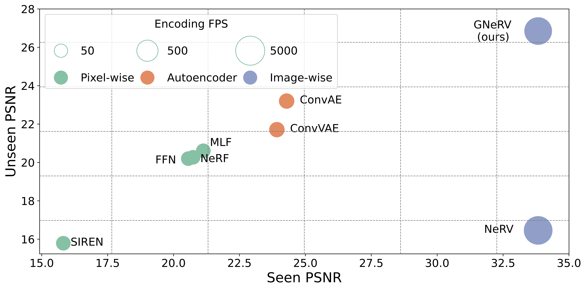
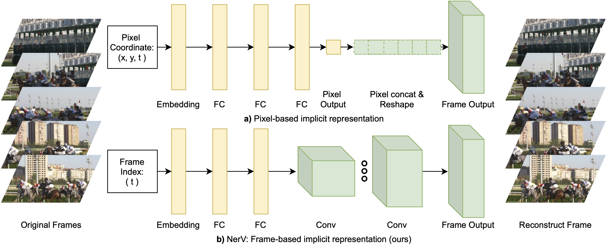

|
I am currently a 4th Ph.D. student in the department of Computer Science at University of Maryland, College Park,
advised by Prof. Abhinav Shrivastava .
I received my Master's degree in Pattern Recognition & Intellegent Systems from
Huazhong University fo Science & Technology (HUST) with the supervison of Prof. Guoyou Wang.
Before that, I got my bachelor's degree from the school of Optical and Electronic Information at HUST as well. My research interest lies in deep learning and computer vision, particularly for neural visual representation, efficient architecture design, and object detection. |


|
Under Review Hao Chen, Matt Gwilliam, Ser-Nam Lim, Abhinav Shrivastava We propose hybrid neural representation for videos, HNeRV, which can be leveraged in various visual tasks and reach comprable performance with SOTA emthods, such as video compression, denoising, inpainting, restoration for unseen frames, and editing completion with few edited frames (10% etc.). |
|  |
Under Review Hao Chen, Matt Gwilliam, Bo He, Ser-Nam Lim, Abhinav Shrivastava We propose an image-wise neural representation, GNeRV, which combines the generalizability of autoencoders with the simplicity and compactness of implicit representation. It generalizes well on unseen images, and encodes images very fast, 36× faster than convolutional autoencoders. |
|  |
NeurIPS 2021 [project page] [pdf] [code] Hao Chen, Bo He, Hanyu Wang, Yixuan Ren, Ser-Nam Lim, Abhinav Shrivastava We propose a image-wise neural representation (NeRV) to encodes videos in neural networks, which takes frame index as input and outputs the corresponding RGB image. NeRV shows good advantage over coordinate-based representation in decoding speed, encoding time and quality, and perform well in video compression and denoising tasks. |